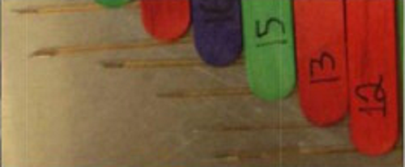

Practically Free von Frey Filaments


Von Frey filaments are simply columns of various diameters that buckle at different forces that are often used to diagnose an animals response to stimuli. This is known as a nociception assessment.


Von Frey filaments are simply columns of various diameters that buckle at different forces that are often used to diagnose an animals response to stimuli. This is known as a nociception assessment.